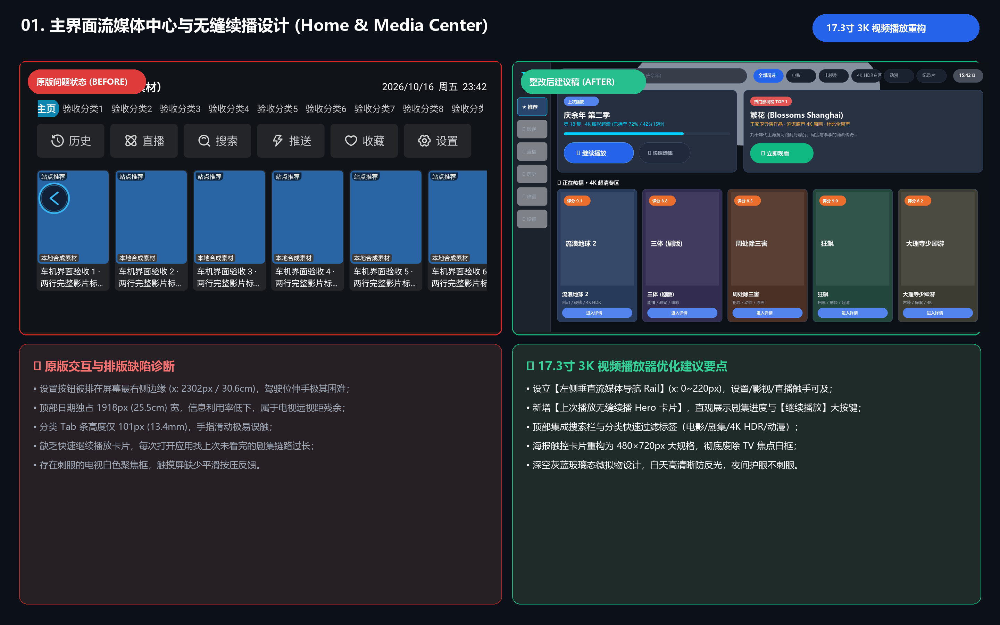
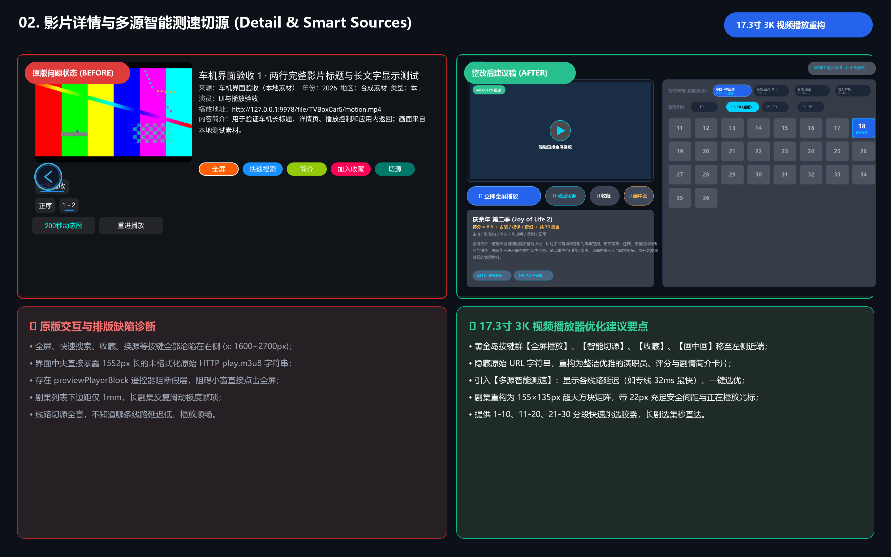
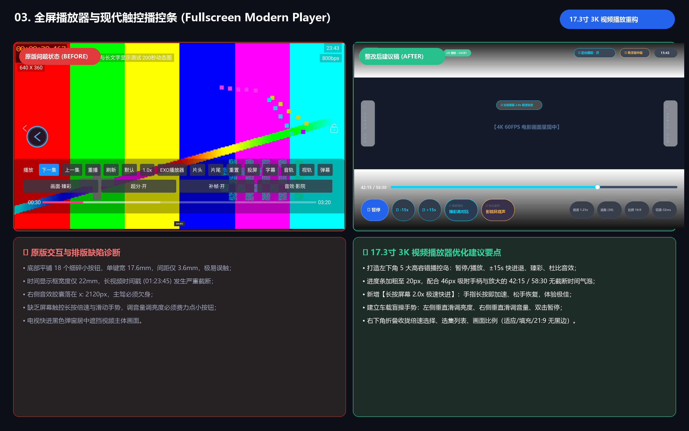
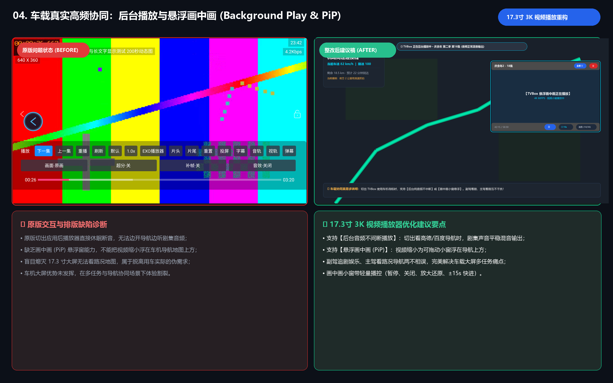
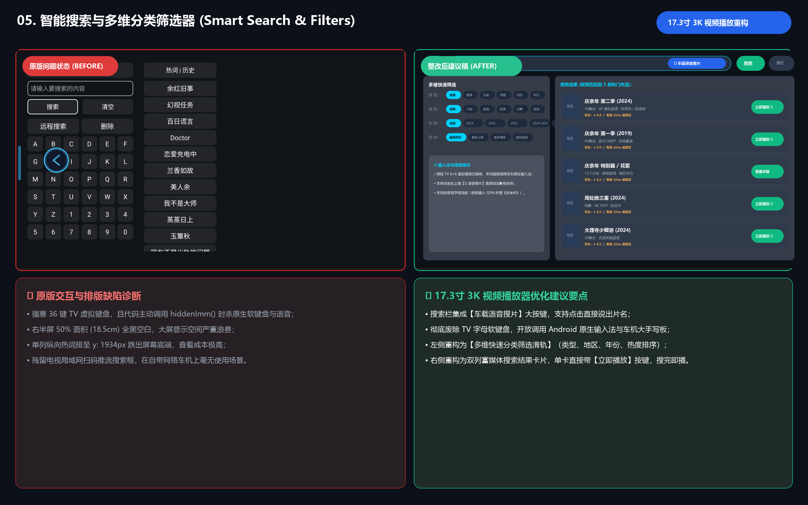
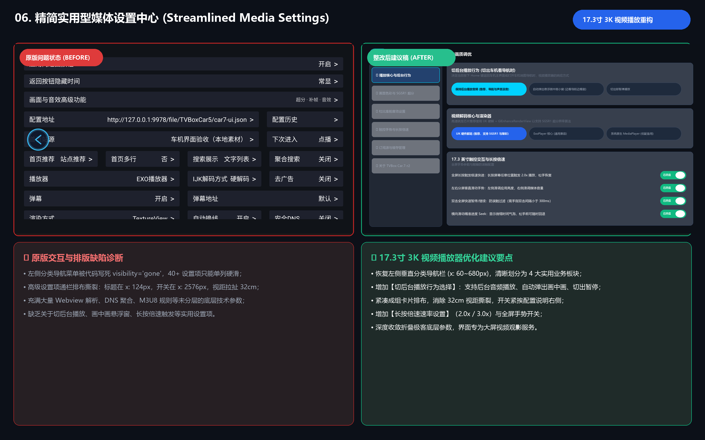

聚焦纯粹大屏视频播放体验：去除车身底盘业务干扰，强化切后台音频保活、悬浮画中画 (PiP)、长按倍速与触控防误触






| 分类 | 功能模块 | 现存状态 | 优化建议与价值说明 |
|---|---|---|---|
| 剪裁 (减法) | 局域网扫码推送页面 | 主导航常驻 | 车机自带网络，行车扫码推流无意义。建议从主界面彻底剥离，移入设置折叠。 |
| 剪裁 (减法) | TV 6×6 虚拟字母小键盘 | 强制展示 | 按键极小难点且代码杀死软键盘。建议废除，移除 hiddenImm()，接入系统输入法与语音。 |
| 剪裁 (减法) | 小窗遥控阻断假层 View | 详情页阻挡 | 为遥控巡焦设计的过渡层，阻碍触控点击小窗全屏。建议彻底删除该 View。 |
| 剪裁 (减法) | 40+ 极客工程底层参数 | 平铺硬滑 | 增加认知负担。建议折叠收拢至【高级设置 / 开发者选项】中默认隐藏。 |
| 新增 (加法) | 后台音频平稳保活 | 缺失 (切出休眠) | 核心刚需：用户切到车机看高德/百度导航时，剧集声音不中断，平稳混音输出。 |
| 新增 (加法) | 悬浮画中画 (PiP) | 缺失 | 协同刚需：视频缩小为可拖动小窗浮在导航上方，副驾追剧、主驾看路两不相误。 |
| 新增 (加法) | 长按屏幕 2.0x 极速快进 | 缺失 | 现代触控体验标配：手指长按屏幕即加速，松手即恢复原速，操作极爽快。 |
| 新增 (加法) | 全屏盲操滑动手势 | 缺失 | 左半屏垂直滑调亮度、右半屏垂直滑调音量、双击暂停、横划精准 Seek。 |
| 新增 (加法) | 多源延迟智能测速切源 | 缺失 (盲试) | 详情页与播放器直观标出各线路延迟（如专线 32ms），一键自动选优切源。 |
| 新增 (加法) | 21:9 宽银幕无黑边填充 | 缺失 | 让 2.35:1 电影在 17.3 寸大屏上满屏播放，消除上下大黑边，视觉沉浸感极强。 |
| 修改 (优化) | 播控栏密集 18 键精简 | 18 键平铺易误触 | 精简为左下角 5 个超大高容错胶囊按键（高 150px），次要功能收拢折叠在右下角。 |
| 修改 (优化) | 进度条与时间戳防截断 | 22mm 文本截断 | 进度条加粗至 20px，时间框放大至 70px 以上，彻底杜绝长视频时间戳文字截断。 |
| 修改 (优化) | 剧集选集分段快速跳选 | 单列长列表硬滑 | 重构为 155×135px 大方块网格，增加【1-10】、【11-20】、【21-30】分段跳选胶囊。 |